泼辣修图采用横竖屏切换设计，我们可以根据自己的使用习惯选择横屏或者竖屏，初次进入泼辣修图的时候默认为竖屏模式：
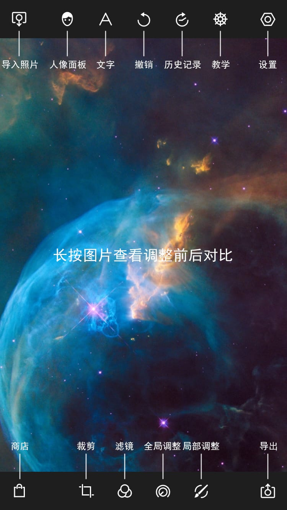
同时我们还可以根据自己的使用习惯调整图标的位置，长按即可实现图标拖拽。为了方便大家观看，下面的所有引导以横屏模式进行：
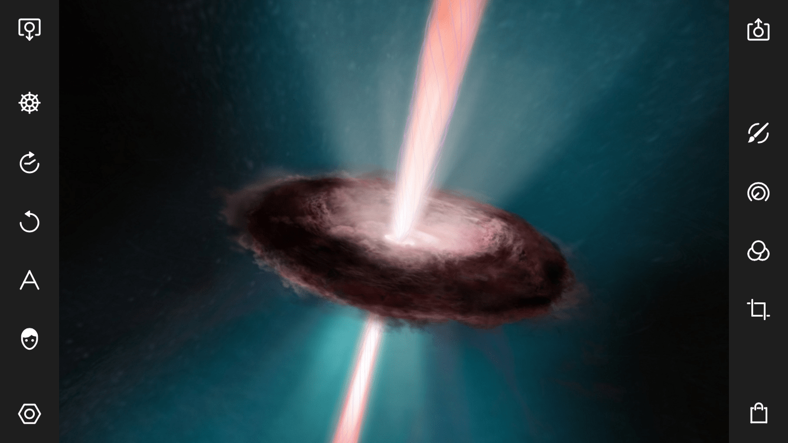
泼辣修图左上角的图标为导入按钮，通过这里可以导入图片进行编辑。
泼辣修图左下角的图标为设置按钮，通过这里可以实现登录泼辣修图账户、修改主题、切换语言、设置最大输出尺寸等功能。
泼辣修图右上角的图标为导出按钮，通过这里可以设置图片的导出质量、图片的导出尺寸等选项。
泼辣修图右下角的图标为应用商店按钮，通过这里可以购买泼辣修图高级功能、解锁全部滤镜。
当我们单击图像，即可调用颜色直方图查看图标的曝光、色彩等信息，当我们再次单击图像的之后，直方图会隐藏（参见直方图拖动与隐藏）。
当初次打开泼辣修图的时候，主屏幕会出现两个选项：打开照片和打开样本照片。当选择打开照片的时候，会跳转至系统文件夹；当选择打开样本照片的时候，泼辣修图会自动打开样本照片。当我们选择从系统文件夹导入一张照片的时候，照片会出现在泼辣修图的主界面。
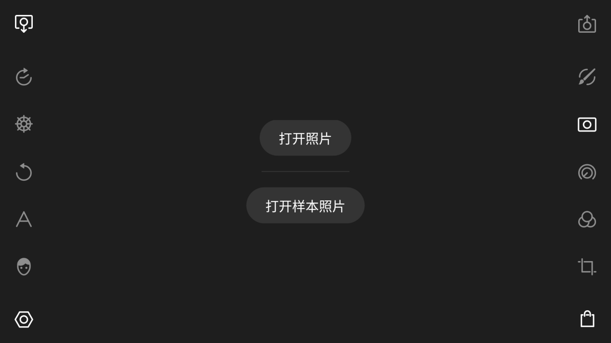
泼辣修图的全局调整是针对图片所有区域执行的调整，调整类别包括色彩、光效、质感、暗角、HSL、曲线、色调、畸变和特效。当我们想调整某个参数的时候，例如将色温调整至+100，我们可以采用色块滑动或者进度条调整，前者只需要我们将手指放到色块上面，然后左右滑动即可；后者只需要我们单击色块，然后上下滑动进度条即可。
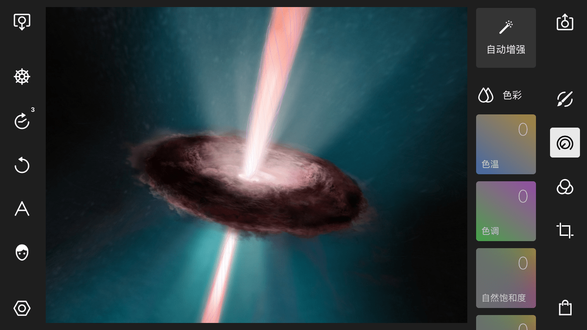
色彩：主要用来调整画面的色彩。包括色温、色调、自然饱和度和饱和度四个调整选项。
光效：主要用来调整画面的曝光。包括去雾、曝光、亮度、对比度、高光、阴影、白色色阶、黑色色阶八个调整选项。
质感：主要用来调整画面的质感，包括清晰度、锐化、色彩降噪和明度降噪四个调整选项。
暗角：主要用来为画面增加暗角或亮角，包括程度、羽化、高光、大小、圆度五个调整选项。
HSL：主要用来调整一种颜色的色相、饱和度和明度，泼辣修图中的HSL工具一共提供了八种颜色：红色、橙色、黄色、绿色、洋红色、紫色、蓝色。青色。
曲线：曲线工具一共包括四根曲线：RGB曲线、红色曲线。绿色曲线、蓝色曲线，利用RGB曲线可以调整画面的曝光；利用后面三根曲线可以调整画面的色彩。
色调分离：色调分离工具可以为画面中的阴影或高光加入指定的色彩。
畸变：主要用来校正画面的畸变或者制造视觉特效，包括镜头扭曲、水平透视、垂直透视三个调整选项。
特效：主要用来为画面增加特殊效果，包括色差、像素化、炫光、噪点程度、噪点大小五个调整选项。
复制调整：单击“复制调整”可以复制当前图片的调整，我们只需要打开另外一张图片，然后单击“粘贴调整”即可将当前图片的所有调整应用至另一张图片。
重置：点击“重置”选项，即可重置当前图片的所有调整，恢复至图片的原始状态。
指南：点击“指南”选项，软件会一一介绍画面中调整工具的使用方法和调整作用，帮助我们更快的掌握软件。
利用泼辣修图的局部调整工具，我们可以对画面中不同的区域采用不同的调整方法，从而实现更加精细的调整。泼辣修图中的局部调整包括选色调整、笔刷调整、圆形调整、渐变调整，我们可以同时应用多个局部调整。
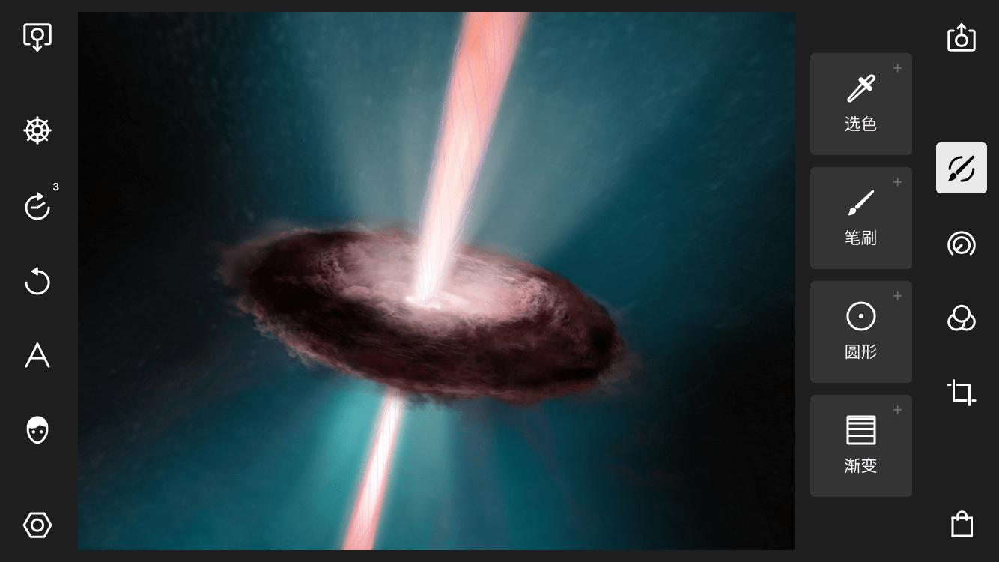
利用选色工具可以对画面中色彩相似的区域执行调整。当新建一个选色之后，画面中会出现一个圆圈，当移动这个圆圈的时候，画面中会出现一些红色的区域，这些红色区域就表示被选中的区域，选色工具会自动识别画面中色彩比较相似的区域，我们的调整只会应用到这些区域。我们还可以通过调整范围控制这些区域的大小。为了更加精细的调整画面，还可以新建一个半径，这样可以为选色工具划定一个边界。当使用半径值后，选色工具主要控制点区域就变成了外面这个大圆以内的，与中心取样点色彩相似的区域。
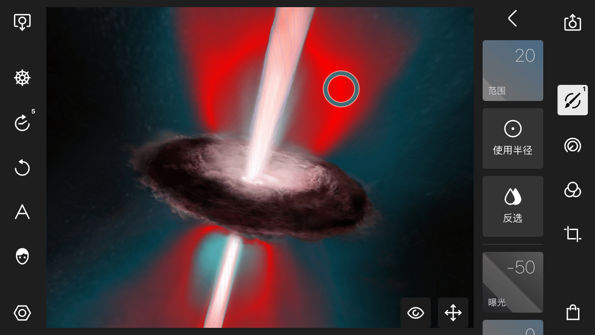
利用笔刷功能，可以手动绘制调整区域，所有的调整只会影响到这些区域。当选中笔刷工具之后，可以使用手指绘制一个区域，在绘制过程中，会有一个红色的区域出现，这些区域就表示被选中的区域。
利用圆形调整，我们可以选择性的调整部分画面，从而实现更加精细的调整。当我们新建一个圆形调整之后，画面中会出现一个圆圈，圆圈以外的部分表示受到我们调整参数的影响，圆圈以内的部分表示不受我们调整参数的影响。
利用渐变调整，我们可以选择性的调整部分画面，从而实现更加精细的调整。当我们新建一个渐变调整之后，画面中会出现三条直线，最上面这条线以上的部分表示完全受到我们调整的影响，最上面这条线到下面这条线之间的部分受到的影响逐渐减弱，最下面这条线以下的部分表示完全不受影响。
利用裁剪功能，我们可以实现对画面内容的剪切、旋转和翻转，裁剪面板下一共包含五个工具：比例、旋转、翻转X、翻转Y、重置。
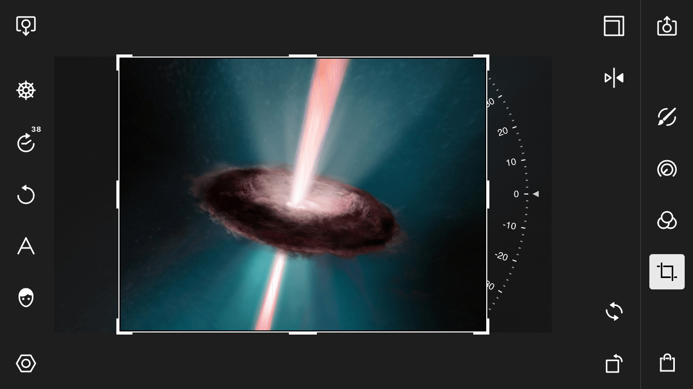
利用人像功能，可以实现对人物面部的美化和优化，泼辣修图的人像功能是基于人工智能技术，自动识别画面中的人脸并自动定位面部五官，我们只需要直接调整对应的选项即可实现人脸的调整。泼辣修图人像面板下，一共包括了智能识别、添加人脸、点去除、液化四个大类。
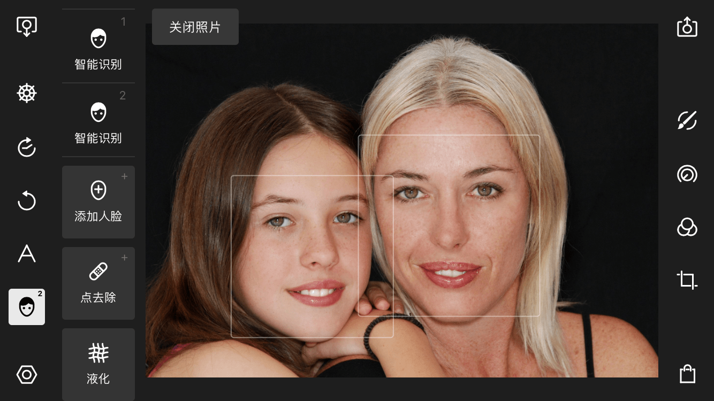
点去除：利用这个工具可以修复一些自动磨皮无法修复的面部瑕疵。
当新建一个点去除之后，画面中会出现两个圆圈，其中带有一个实心圆圈的为“源区域”，而不带有实心圆圈的为“目标区域”，瑕疵修复工具即是利用“源区域”去修复“目标区域”。
在瑕疵修复工具中，有两种模式，一是愈合，二是克隆。
在愈合模式下，泼辣修图只会将“源区域”的纹理应用于“目标区域”，它不会影响“目标区域”的亮度，因此有较好的光影匹配度。 而在克隆模式下，泼辣修图是将整个“源区域”原封不动的复制到“目标区域”，它的覆盖效果更好，但是有时候容易出现光影不匹配的情况。我们需要根据实际的情况选择这两种模式.
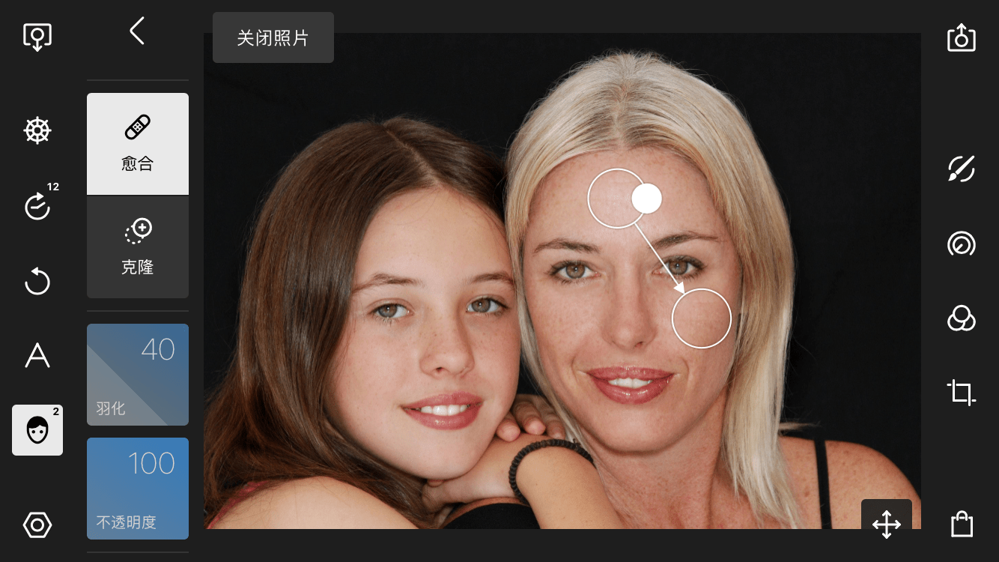
利用文字功能我们可以为照片加入文字。该功能下一共包括四个调整选项：添加文字、形状、线条、预设。
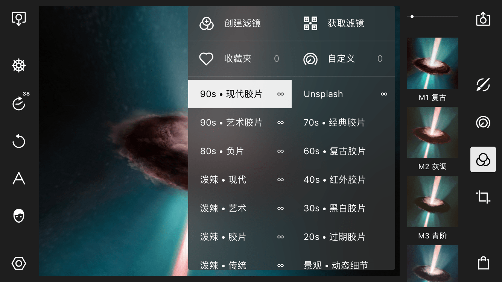
我们可以使用泼辣修图的“获取滤镜”功能导入和安装滤镜。首先点击滤镜图标，然后点击左侧的更多，这时候会弹出一个滤镜面版，选择右上角的获取滤镜：这时候会出现两个选项，一是扫描滤镜，二是从相片导入。 当选择扫描滤镜之后，这时候软件会调用系统相机，我们只需要将相机对准带有泼辣滤镜信息的二维码即可安装滤镜； 当选择从照片导入之后，这时候软件会进入系统相册，我们需要选择带有泼辣修图滤镜信息的二维码即可安装滤镜。在安装滤镜的时候，需要有正常的网络连接，否则将出现无法安装的情况。
在泼辣修图中，如果我们调出了一个自己非常喜欢的滤镜效果，可以通过新建滤镜将其保存，以应用到其他照片上面。 首先点击滤镜图标，然后点击左侧的更多展开滤镜面版，然后点击新建滤镜：这时候会弹出一个面板，它包括编辑与注释两个栏目。
编辑下面选项的作用是：
主要调整：当勾选此选项后，所有的主要调整（例如色彩、光效、质感）都会被保存。
选择性调整：当勾选此选项后，所有的选择性调整（包括线性调整、圆形调整、选色调整和笔刷调整）都会被保存。
文本：当勾选此选项后，所有的文本信息会被保留。
裁剪：当勾选此选项后，所有的裁剪信息会被保留。
泼辣修图的滤镜模式不同于其他修图软件，主流修图软件的滤镜参数都是封装的，我们应用一个滤镜时，不知道这个滤镜到底调整了哪些参数，同时也只能基于滤镜效果执行全新的调整，而无法直接修改滤镜本身。但是当我们应用泼辣修图中某一个滤镜的时候，则可以看到这个滤镜所有的调整参数，也可以基于这些调整参数进行再次编辑，灵活度更大，可控度更高。
利用泼辣修图的历史记录功能，我们可以快速的返回至历史操作的任意一步。我们所有的操作步骤都会被记录在历史记录面板之中，当我们点击其中的任意一步历史操作时，图像就会恢复至这一步的状态。
通过“历史记录”的更多我们可以调出两个选项：“恢复到原始”和“清除历史记录”。
恢复到原始：点击这个选项之后，图像会恢复到原始的编辑状态，但是原有的历史记录并不会丢失。
清除历史记录：点击这个选项之后，图像会恢复到原始的编辑状态，且所有的历史记录将被清空。
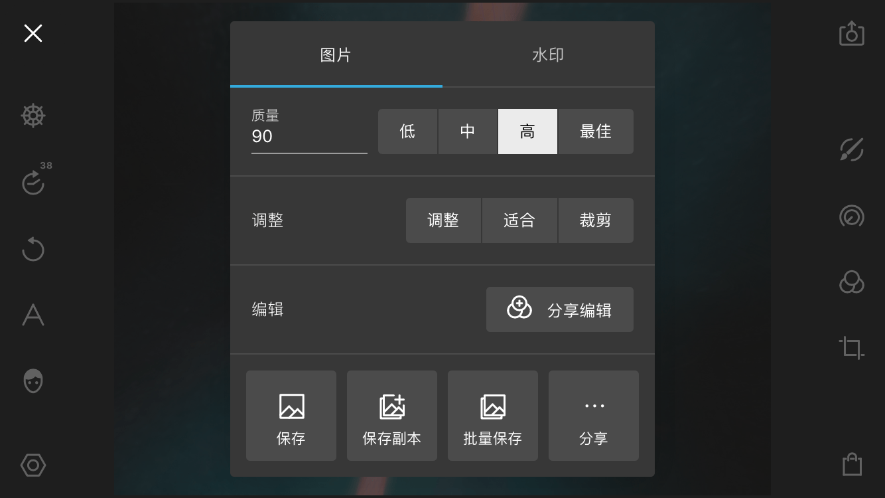
通过图片选项我们可以设置导出图片的质量和调整。
质量：泼辣修图在导出时支持将质量设置为低、中、高、最佳四个档次，输出质量越高图像的整体质量（清晰度、色彩、细节等）就会越高，但图片体积也会越大。
我们也可以自己手动设置质量值，例如将质量值设置为75。
调整：我们可以利用调整选项改变图片的尺寸，泼辣修图提供了三种模式供我们选择，分别为调整、适合和裁剪。
调整：调整就是直接调整图片，不保存图片比例。
适合：适应会保持画面的比例，然后使用最短的那一条边等比例缩放画面。
裁剪：如果我们导出的长宽值小于原图的长宽值，原图将会被裁剪。
利用水印功能我们可以为自己的照片加入水印。
使用水印：当打开“使用水印”选项时，水印功能开启，这时候我们可以选择系统默认水印或者外部水印，并将其添加至照片中。
编辑水印：单击“编辑水印”选项之后，会出现四个调整选项：选择图片、不透明度、大小、角度。
选择图片：利用这个选项我们可以从外部导入图片作为水印，图片的格式可以是JPEG或者PNG。
不透明度：调整水印的不透明度。不透明度为100时，水印完全不透明（如果水印本身不带有透明信息）；不透明度越低，文字与原图的融合就越强烈。
大小：调整水印的大小，数值越大水印占据的画面空间就会越大；数值越小水印占据的画面空间就会越小。
角度：调整水印的角度，提高数值会让水印呈现出逆时针角度的旋转，降低数值会让水印呈现出顺时针角度的旋转。
素材来源：http://www.polaxiong.com/wiki/chan-pin-gong-neng/po-la-xiu-tu-xin-shou-yin-dao.html